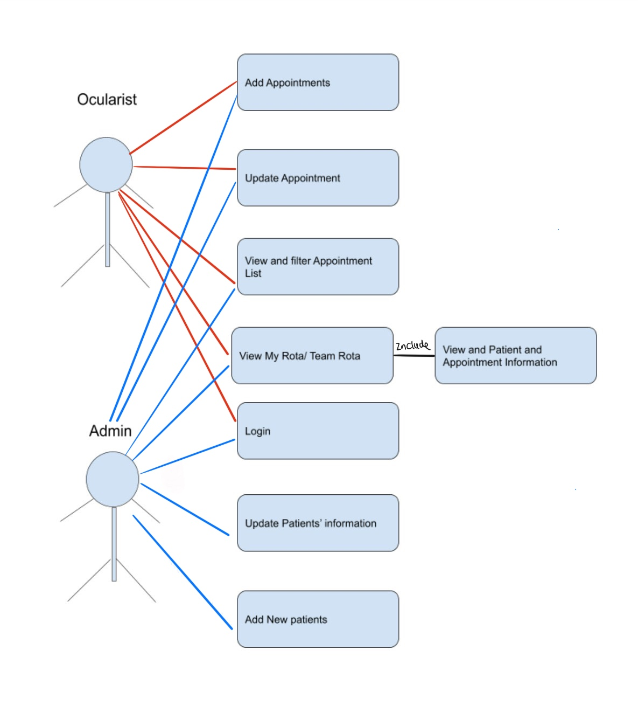

Client Introduction
Moorfields Eye Hospital is a specialist NHS eye hospital located in London. The prestigious ocular prosthetics department is made up of 5 ocularists and 2 admin staff. Alongside their busy daily schedules where ocularists are seeing patients and making ocular prosthetics, ocularists spend a significant amount of time navigating spreadsheets in order to complete basic tasks. These tasks include actions such as booking patients in, booking appointments and handling referrals.
Project Background
Data that ocularists frequently need to see is fragmented across multiple spreadsheets.
To elaborate, in the current workflow, there is a rota spreadsheet that stores the timetable
for a team of ocularists.
However, to access the details of an appointment on the timetable, an ocularist would have to
access an entirely separate spreadsheet that holds all of the appointments.
Similarly, if an ocularist would like to view information about a patient, they would need
to navigate a separate spreadsheet dedicated to displaying all of the patients' information.
Therefore, in order for an ocularist to book an appointment, they have to navigate and
make edits
across various spreadsheets.
Another major drawback of the current system is that a large amount of information is
presented to an ocularist at once,
this makes it tedious to find the information that they are looking for, and ocularists find
this
overwhelming.
This process costs precious time for ocularists, time that they could instead use on
creating
prosthetics and seeing patients.
Moorfields Eye Hospital came to us looking for a streamlined and easy-to-operate booking
system to save time for their employees.
Previous System - Spreadsheet Based
Project Goals
Our project goal is to create a web application for Moorfields that resolves the frictions with the current system and reduces the effort needed to manage appointments and patients at the hospital. It should provide ocularists and admins with a platform to manage their workflow as seamlessly as possible. We want to create an extendable and sufficiently documented codebase so that future developers can extend this project as they see fit.
Client Requirements
For the duration of the project, we held weekly meetings with representatives from
Moorfields.
During the first few meetings, the main subject of discussion was the requirements of the
application we planned to build.
During the meetings, Moorfields walked us through the process of triaging a patient. From
first receiving their referral,
to booking and treating the patient. They also provided us with mock spreadsheets and
identified the type of information
that needs to be stored on the system.
After the first few meetings, we refined the following requirements from our client:
1. An easy way to book and reschedule appointments.
2. An easy way to view patients' information and relative data.
3. Allow multiple people to edit data at once.
Clients Pain Points and Solutions
Requirement Gathering
To collect requirements for the new system, we conducted primary research from the users. We took a user-first approach to generate the requirements. From the research, we considered the largest and most frequently mentioned frictions in the current system. We also took on advice from the users on how best to improve the current system. Below are the notable results from our primary research which was in the form of interviews and surveys.
Interviews
As part of our primary research, we conducted semi-structured interviews with some users of the current system. One subject of the interview was an ocularist whilst the other was an admin staff.
Surveys
As another form of primary research, we conducted a Likert scale survey on current users of the system, along with some pseudo-users, to get a wider range of opinions on the current system. To perform an analysis of the data, we took the mean of the dataset. This figure was the primary statistic that we based our further decisions on.

Personas
Here are personas for typical ocularists and admins
Use Cases
After understanding our client's requirement, We drew a use case diagram showing possible interactions that users can have with our web app.
MoSCoW List
1. Allow multiple users to create/edit/cancel appointments at the same
time and automatically update after editing by refreshing the
screen.
2. Record and view the changes in an appointment.
3. Show appointments for today by default and be able to show
appointments for selected date and selected week.
4. Ability to view specific patients' detail by clicking the patient's
name.
5. Ability to view and search appointments.
6. Ability to view and search patients.
7. Ability to see and hide team rota.
8. Cancelled appointments should be automatically removed from rota to
reduce repetitive work.
9. Ability to show all free slots.
10. Schedule appointment to multiple slots if it lasts longer than 1
slot.
11. Constraints regarding booking children into slots.
12. User authentication for the ocularists and admin staff.
13. Use distinct and intuitive colours to indicate different
appointment type in my rota.
14. Options to filter information about a patient at waitlist page.
15. Hide patient already seen from time table.
16. Automatically fill in patient details when booking new
appointments.
17. Arrange free slots between each appointments in a day.
18. Send notifications if appointments due within 2 days are cancelled.
19. Suggest patients from waitlists according to their waiting time and
urgency.
20. Automatic time slot suggestion when scheduling a patient.
21. Manufacturing Tracking.
22. Statistics Tracking.
*This is the original MoSCow list. During the project, certain modifications were made to this MoSCoW list upon mutual agreement with the client.
Non-Functional MoSCoW List
1. Be delivered with documentation in the form of a website.
2. Applied the the design principles of visibility, consistency and
feedback wherever it is deemed nessecary.
3. Deliver an extensible system.
4. Prevent unauthorised access/only allow access to legitimate
users.
5. Deliver a codebase that follow best practices.
6. Be able to run in multiple platforms.
7. High learnability.
8. Be scalable for larger numbers of patients database.
9. Automatic deployment/CI Pipeline.
10. System integration with PAS and OpenEyes.